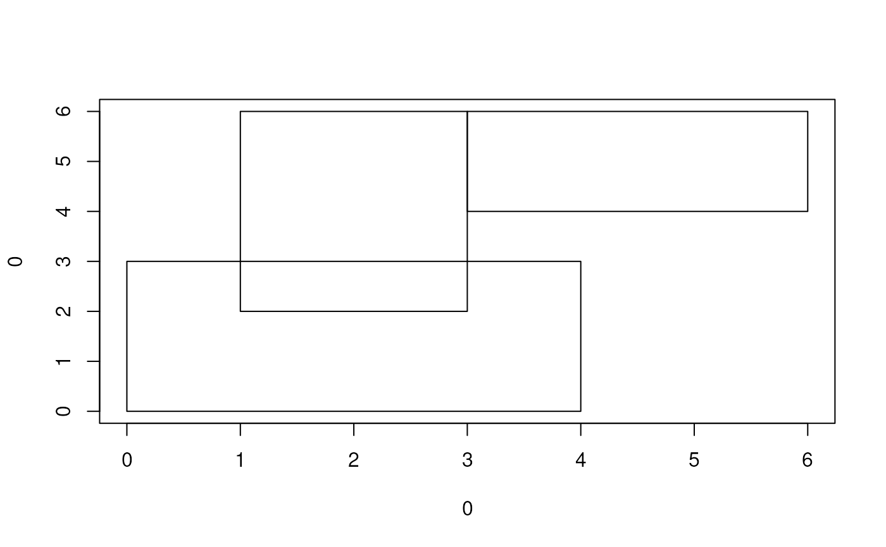

Determine a subset of rectangles with unique, non-overlapping areas
rectUnique.RdGiven a matrix of rectangular areas, this function determines a subset of those rectangles that do not overlap. Rectangles are preserved on a first come, first served basis, with user control over the order in which the rectangles are processed.
Details
The m matrix must contain four colums defining the position of
rectangle sides in the folloing order: left, right, bottom, top. This
function is currently implemented in C using a an algorithm
with quadratic running time.
Author
Colin A. Smith, csmith@scripps.edu
Examples
m <- rbind(c(0,4,0,3), c(1,3,2,6), c(3,6,4,6))
plot(0, 0, type = "n", xlim=range(m[,1:2]), ylim=range(m[,3:4]))
rect(m[,1], m[,3], m[,2], m[,4])

xcms:::rectUnique(m)
#> [1] TRUE FALSE TRUE
# Changing order of processing
xcms:::rectUnique(m, c(2,1,3))
#> [1] FALSE TRUE FALSE
# Requiring border spacing
xcms:::rectUnique(m, ydiff = 1)
#> [1] TRUE FALSE FALSE
# Allowing adjacent boxes
xcms:::rectUnique(m, c(2,1,3), xdiff = -0.00001)
#> [1] FALSE TRUE TRUE
# Allowing interpenetration
xcms:::rectUnique(m, xdiff = -1.00001, ydiff = -1.00001)
#> [1] TRUE TRUE TRUE